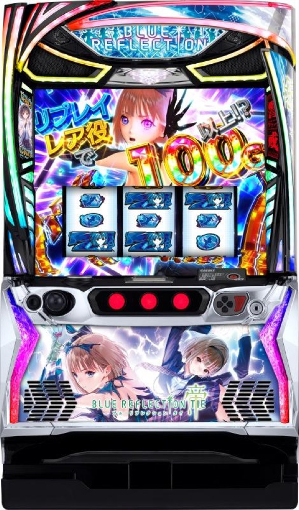

Lブルーリフレクション帝
大鎌の全刈上乗せから、純増約7.5枚の上位ATへ。
- 導入
- 2026年12月導入予定
- メーカー
- オリンピア
- 分類
- パチスロ
主要スペック
2026年12月21日導入予定。軽めのCZ＋AT合算初当りから、リフレクションチャージ、全刈上乗せ、上位ATへ進みます。
- 設定1初当り合算約1/162.6
- 通常AT純増約4.0枚/G
- 上位AT純増約7.5枚/G
Lブルーリフレクション帝の見どころと計算条件
2026年12月21日導入予定。軽めのCZ＋AT合算初当りから、リフレクションチャージ、全刈上乗せ、上位ATへ進みます。
ブルーリフレクション帝を数字で早分かり
リフレクションチャージからBLUE REFLECTION RUSH、BLUE REFLECTION帝までの流れと、設定ごとの結果差を固定レートで比較できます。
CZ＋AT合算初当り
公表されている初当り合算は設定1約1/162.6から設定6約1/150.1です。
AT単独確率の未公表部分は比較用代表値とし、実機の確定値として表示しません。
全刈上乗せと上位AT
通常ATは純増約4.0枚/Gで、大鎌による全刈上乗せを狙います。
上位挑戦は成功期待度約60%。2回成功時の上位ATは純増約7.5枚/Gとして獲得幅へ反映します。
導入前情報
2026年12月21日導入予定の公表情報を使用しています。
導入後の解析公開に合わせて設定別AT初当りを更新する予定です。
平均Gと投資目安の計算
掲載するBLUE REFLECTION RUSH初当り約1/330は設定1基準です。当サイトでは50枚あたり32G、1,000円46枚貸しの固定条件から、設定1基準の平均投資目安を約11,200円と計算します。
シミュレーターでは設定1〜6を均等抽選します。設定1〜6で公開されている初当り値を個別に使います。公開されていない特化ゾーン・上位到達率の設定差は加えません。 換金は5.2枚交換で固定し、結果とランキングに設定を表示します。
シミュレーション結果の見方
当るまでリフレクションチャージ・BLUE REFLECTION RUSHまでのゲーム数
設定設定1・2・3・4・5・6から抽選された今回の設定
上位到達リフレクションチャレンジとBLUE REFLECTION帝への到達
最終収支差枚と5.2枚交換の収支目安
結果は自動で「マイ記録」に保存され、同じ機種を何回試したか、最高収支、勝率をあとから確認できます。
簡易シミュレーターについて
リフレクションチャージ・BLUE REFLECTION RUSH・BLUE REFLECTION帝の流れを固定条件で体験できます。JavaScriptを有効にすると、この位置にシミュレーター、演出、マイ記録、機種別ランキングが表示されます。
結果は娯楽・確率理解のための参考表示です。金銭的価値や交換価値はなく、実際の勝敗や収支を保証しません。18歳未満の方の利用はお控えください。
ブルーリフレクション帝のよくある質問
ブルーリフレクション帝はどんな台？
2026年12月21日導入予定。 設定1初当り合算約1/162.6が主な確認ポイントです。
ブルーリフレクション帝の平均投資目安は？
設定1基準のBLUE REFLECTION RUSH初当り約1/330と、50枚あたり32G・46枚貸しの固定条件から、平均11,200円を目安として表示します。実際の設定や遊技状況で結果は変わります。
設定とゲームの流れはどう抽選する？
開始時に設定1・2・3・4・5・6から1つを均等抽選し、リフレクションチャージ、BLUE REFLECTION RUSH、リフレクションチャレンジ、BLUE REFLECTION帝の順で到達を判定します。設定は最終結果とランキングに表示します。
収支はどう計算する？
1,000円46枚貸し・5.2枚交換の固定条件で投資、換金、収支目安を計算します。実店舗の再プレイ、持ちメダル、端数処理は含みません。
2026年12月21日導入予定です。導入後に固定条件で遊べるようになります。